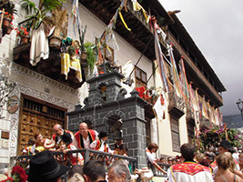

Romería de San Isidro Labrador en ...
Autora: Yolanda Gallego Monedero |
|  |

Revista San Isidro 2015

Revista San Isidro 2015
BREVE HISTORIA AGRÍCOLA Y GANADERA (2ª Parte)
En el Priorato de San Juan se tenía costumbre de prestar a los agricultores un tercio de los diezmos para la siembra.
En el Libro de Cuentas 1612-1628 folio 90 nos encontramos la siguiente reseña:
“Mas doce reales que pagó a Diego García de Siruela, vecino desta villa, ...
En el Priorato de San Juan se tenía costumbre de prestar a los agricultores un tercio de los diezmos para la siembra.
En el Libro de Cuentas 1612-1628 folio 90 nos encontramos la siguiente reseña:
“Mas doce reales que pagó a Diego García de Siruela, vecino desta villa, ...

EL HISTORIAL CAMPESINO
Fácil es señor doctor,
decir no bebas más vino
y que difícil que es
para el que nació campesino.
Yo que desde muy pequeño
dediqué mi vida entera
y en darle puse mi empeño,
rango, prestigio y solera..
Fácil es señor doctor,
decir no bebas más vino
y que difícil que es
para el que nació campesino.
Yo que desde muy pequeño
dediqué mi vida entera
y en darle puse mi empeño,
rango, prestigio y solera..
ALGUNOS MILAGROS DE SAN ISIDRO
No todos sabrán de la gran cantidad de milagros que se le atribuyen a San Isidro Labrador, muchos de ellos, post mortem. Cuatrocientos treinta y ocho milagros en total, de los cuales vamos a contar aquí los más conocidos.
No todos sabrán de la gran cantidad de milagros que se le atribuyen a San Isidro Labrador, muchos de ellos, post mortem. Cuatrocientos treinta y ocho milagros en total, de los cuales vamos a contar aquí los más conocidos.
SOLAMENTE HACE 50 AÑOS ...
Tuvo lugar una catástrofe climatológica en toda la zona de La Mancha. Un gran frente frío cruzó toda la Península dejando fuertes heladas y copiosas nevadas que hizo que durante varios días la nieve se quedara congelada sobre todos los cultivos de la zona.
En esos días, concretamente durante los días del 19 al 22 de Febrero de 1.965 ...
Tuvo lugar una catástrofe climatológica en toda la zona de La Mancha. Un gran frente frío cruzó toda la Península dejando fuertes heladas y copiosas nevadas que hizo que durante varios días la nieve se quedara congelada sobre todos los cultivos de la zona.
En esos días, concretamente durante los días del 19 al 22 de Febrero de 1.965 ...
Conoce el reglamento interno, los requisitos de acceso y pasa a formar parte de nuestra Hermandad.

| Teléfono: 683 122 794 Casa Parroquial de la Iglesia de San Francisco Plaza de San Francisco, s/n 13600 - Alcázar de San Juan (Ciudad Real) |
Síguenos en |